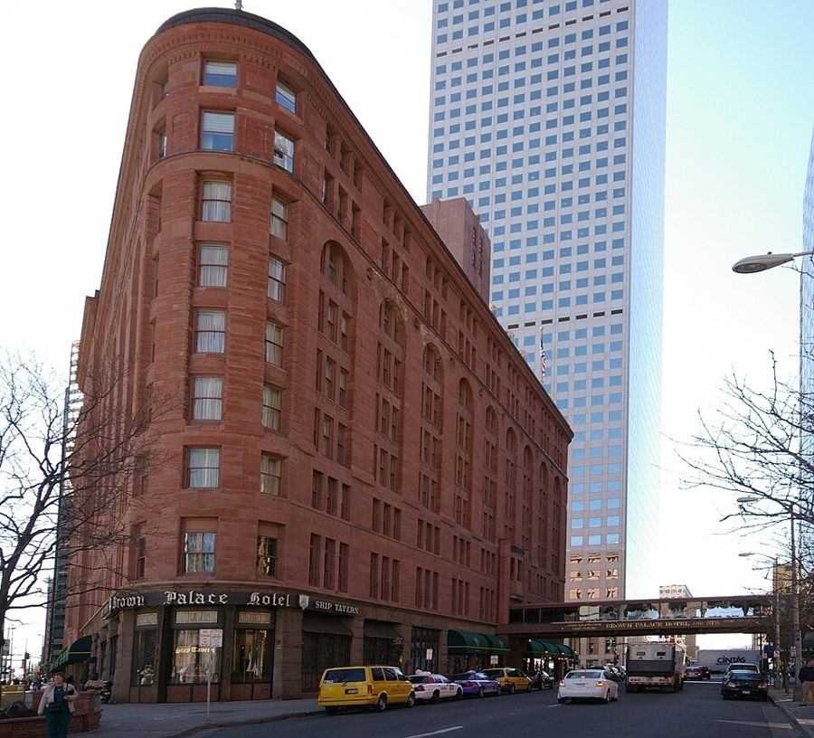

1930 年代起，美国有了成规模的天体运动（nudism），营地多设在偏僻的私人林地，对外只叫 sunbathing club、sun club 一类含糊的名字。
全国性的组织叫 American Sunbathing Association。圈子里的规矩是只称名、不问姓、不打听别人的职业。会员多是体面的中产夫妇，在当时仍被外人当作怪癖。
场景 3Brown Palace

丹佛的 Brown Palace Hotel，1892 年开业，三角形的楼，至今还在营业。
Hustvedt，CC BY-SA 3.0，维基共享资源
丹佛最老牌的豪华旅馆，好几位总统住过。在美国人耳朵里，「我昨晚住 Brown Palace」等于说自己是个正经的体面人。书里的名字前面多了一个 New，那是设定。
美国刑法把罪分两档：felony 是重罪，可判一年以上监禁；misdemeanor 是轻罪。a party to 是「某件事的当事一方」，合同有 parties，犯罪也有：
be a party to a felony 就是在一桩重罪里有份。
英文
中文
一句话
privileged communication
受特权保护的交谈
对律师（或医生、神父）说的、对方不得外泄的话。
client
委托人，客户
成了 client，特权才开始算。
vouch for
为……担保
拿自己的信誉替别人作保。俱乐部带客人进门，要有会员担保。
honor-bound
道义上有责任
不是法律逼的，是名誉逼的。
felony
重罪
见上。
trespasser
擅入者
没得到许可进入别人土地的人。
cross-examine
盘问
本义是法庭上对对方证人的交叉询问。
mint
铸币厂
政府铸硬币的地方，也按官价收购黄金。
jeweler’s license
珠宝商执照
书里：有了它才可以合法地手里有金子。
词与短语
词条按在书里出现的顺序排，按场景分组。斜体小字是它所在的那句话里的几个词，方便你在书里找到。
场景 1 EVEN AS HE stabbed at …
stab at
… AS HE stabbed at the button …
猛地朝……戳过去
even as = 就在……的同一瞬间。he 是上一章的 Twitchell。
go through with it
… want to go through with it. …
把这件事做到底
go through with = 硬着头皮干完（多用于让人犹豫的事）。和 go through（经历）不同。
chuck away
… I had chucked away everything and …
随手扔掉
口语。第 1 章他 chuck 的是保险公司的广告，这里是整个安稳日子。
which way I was going
… know which way I was going. …
我在往哪一头去
不是东南西北，是往过去还是往未来。下一句的 get there 也一样：到不到得了。
fall like a stick
… I fell like a stick, collapsed …
直挺挺地掉下去
后半句 collapsed like a sack：像麻袋一样瘫成一堆。一硬一软，两个比方写一个动作。
Where the devil …?
… saying, “Where the devil did you …
你到底是从哪儿（冒出来的）？
the devil 插在疑问词后面加强语气，比 the hell 文雅一点。原文 you 是斜体：重音在「你」。
fists on his hipbones
… with his fists on his hipbones. …
两拳抵在胯骨上（叉着腰）
通常说 hands on hips。这里写 hipbones，是因为拳头直接抵在骨头上，读到第 7 段就明白为什么。
save that
… not unpleasant save that at the …
只是，除了……这一点
save = except，书面语。not unpleasant 是双重否定：长得不讨厌。
sore at
… he seemed sore at me. …
对……很恼火
美国口语。不是「酸痛」。
when I was not
… knew when I was not—I was …
我「不在」哪个年代
前面问的是 Where am I，这里把 where 换成 when，再加一个否定：他只能先排除。
keep that sort of thing for
… they kept that sort of thing …
那种事只留给（海滩）
keep A for B：A 只在 B 的场合才有。that sort of thing 是故意不明说，下一段揭开。
coats of tan
… but smooth coats of tan. Not …
一身晒出来的肤色
双关。coat 是外套，也是「一层」（a coat of paint 一层漆）。tan 是晒黑的肤色。
场景 2 “One thing at a time,” he …
posted
… This is posted private property; you’re …
立了告示牌的
见上面「背景」。不是「邮寄」，也不是「发帖」。
getup
… in that Mardi Gras getup?” …
（古怪的）一身打扮
口语，名词，带点嘲笑。动词 get up 有「打扮」的意思。
Other times, other customs
… answer. Other times, other customs—I could …
时代不同，规矩不同
套的是法语成语 autres temps, autres mœurs。Dan 此刻以为自己到了一个陌生的时代。
pick it up off
… could pick it up off something, …
从（别的东西）上顺便看来
pick up 是「不经意地得知」。他后悔没等着从日历或报纸上自己看。
Brother
… “Brother, you did get a lump. …
好家伙；老兄
感叹，不是认亲。lump 是头上磕出来的包，接 Dan 刚说的 knock on the head。did 是强调。
make it
… stand. I’d made it, I’d made …
赶上了，办成了
make it = 成功抵达、及时赶到。it 不指具体东西。
call out the reserves
… to call out the reserves, so …
喊增援
reserves 是警察或军队的后备队。夸张说法：他看我的眼神像是要叫人来把我带走。
subject to
… “I’m subject to sudden attacks of …
容易犯（某种病）
be subject to + 病症。attack 是「发作」：a heart attack。amnesia 是失忆，第 1 章 Dan 说过自己巴不得来一场。
spell
… I am. These spells hit me …
（病的）一阵发作
a dizzy spell 一阵头晕，a cold spell 一阵寒流。不是「拼写」，也不是「咒语」。
personal eccentricity
… call it personal eccentricity. Uh...like …
个人怪癖
eccentric 本义是「偏离圆心的」，工程上是偏心轮。Dan 顺手把球踢了回去。
call for
… would call for explanation under some …
需要，要求
不是「打电话叫」。The situation calls for patience。
grounds
… These are the grounds of the …
（某机构的）场地、园区
复数。school grounds、hospital grounds。
场景 3 JOHN AND JENNY SUTTON were …
invite an earthquake in for tea
… invite an earthquake in for tea. …
地震来了也会请它进屋喝茶
Dan 造的夸张说法，解释前面的 unshockable：什么都吓不着的人。
fishy
… with my fishy explanations and wanted …
可疑的，站不住脚的
闻着有鱼腥味。Something smells fishy。
stick to my story
… I stuck to my story about …
一口咬定原来的说法
story 这里是「说辞」，常暗示不全是真的。后面两处 stick to ‘dizzy spells’ 是同一个 stick to。
drop you there
… Boulder can drop you there and …
顺路把你捎到那儿放下
drop someone (off)：开车送到某处让人下车。
mighty
… to be mighty, mighty curious.” …
非常，相当
美国西部口语里当副词用，等于 very。
out of order
… the one out of order, not …
不合规矩的那一个
常见意思是「机器坏了」。这里是 order 的另一义：不合场合。
peel off
… if I peeled off my clothes too?” …
脱掉（像剥皮一样）
peel 是剥果皮。后面还有 peel down。
bare-skin camp
… of the bare-skin camps before, seeing …
天体营
Dan 自己的叫法，不是正式名称。seeing no point in them：看不出有什么意思。
paddle your sweet self
… you paddle your sweet self into …
劳你大驾，溜达到……
paddle 是光脚啪嗒啪嗒走、蹚水。夫妻间的玩笑话，前面的 My only love 也是。
guard my speech
… have to guard my speech. “Movies” …
说话得留神
他差点带出两个 2001 的词。grabbie 见第 5 章。
spread the word
… you spread the word, as if …
把话传开
the word 是「消息」。
locker-room modesty
… excuse for locker-room modesty once Jenny …
更衣室里的那种害羞
locker room 是体育馆的更衣室，全是同性。意思是：女士一走，就没有理由再躲着换了。
figured at
… worth of gold, figured at the …
按……折算
figure 作动词：计算。第 1 章的 figures 是数字，figure of speech 是修辞，这是第三个用法。
girdle
… instead of a girdle, the first …
（女用）紧身褡，束腰
上一章 Dan 说过金丝缠腰「不推荐当 girdle」。belt 可以解开，girdle 得整个套上套下。
场景 4 I waved it but it …
wave it
… I waved it but it didn’t …
把它（烟）一挥
第 5 章：2000 年的烟在空中一挥就着。Dan 手快了。
vouch for
… going to vouch for you to …
替你作保
见行话表。
in his shoes
… not have in his shoes. But …
换了我在他的位置
in someone’s shoes：处在某人的境地。would not have 后面省了 believed it。
kick up the hoorah
… kick up the very hoorah that …
闹出那种大动静
kick up a fuss / a row：大吵大闹。hoorah 是喧哗，也写 hoo-ha。the very = 正是那个。
shady
… and somewhat shady citizen, engaged in …
不太光明正大的
本义是背阴的。a shady deal 见不得光的买卖。
hanky-panky
… engaged in hanky-panky I didn’t want …
小动作，鬼把戏
第 5 章 Dan 用它说 Belle 在支票上做手脚，这回说的是自己。
meet a case
… expected to meet a case. But, …
亲眼碰上一个实例
case 是「案例」，指 Fort 书里记的那种怪事。这本书里 case 的第三个意思（病例、一箱、案例）。
privileged communication
… I make a privileged communication?” …
受保密特权保护的谈话
见行话一节。privileged 不是「有特权的阔人」。
Shoot.
… “Shoot. Privileged.” …
说吧。
口语：有话就讲。两个词答完了 Dan 的两个问题：收你当客户，保密。
ESP
… any of this ESP magic. I …
超感知觉
见上面「背景」。
spread it around
… communication. Don’t spread it around.” …
别到处说
my first advice to you：这是律师给客户的第一条「法律意见」，说得一本正经。
That suits me.
… “That suits me.” …
正合我意。
suit 作动词：合……的意。第 1 章的 Suit yourself 是同一个词。
场景 5 He rolled over. “But I …
get by
… and those will get by. Anybody …
混得过去
get by = 勉强过关，不惹人注意。
in a queer voice
… said in a queer voice, “is …
声音都变了
queer 在 1950 年代只是「古怪、不对劲」，没有今天的意思。
dead softness
… tried the dead softness of the …
毫无弹性的那种软
dead 指按下去不回弹。纯金很软。后面的 putty 是镶玻璃的油灰，hefted 是掂了掂分量。
Cripes!
… “Cripes! Danny...listen to me carefully. …
老天！
Christ 的委婉变体，不算粗话。第 3 章 Dan 自己也说过。
have no use for
… I’ve got no use for a …
看不上，不想打交道
不是「用不着」，是厌恶。
dump
… to me. I dump him. And …
甩掉，不再管他
本义是倒垃圾。现在时：这是我一贯的做法。
be a party to
… be a party to a felony. …
在……里有份
见行话一节。和聚会无关。
come by
… you come by this stuff legally?” …
弄到，得来
come by + 东西 = 获得。不是「顺路来一趟」。
over the counter
… bought that over the counter, legal …
在柜台上公开买的
后半句 legal as breathing：跟喘气一样合法。第 8 章说股票 over the counter 是「场外交易」，同一个词组的金融义。
turn it in
… want to turn it in for …
上交（换成……）
turn in：交给官方。捡到钱包 turn it in to the police。
in the long run
… “Nothing, in the long run...if you …
到头来，从长远看
和后半句的 in the meantime（在那之前）是一对：结果没事，过程够你受的。
kick a little dirt over it
… better kick a little dirt over …
往上面踢点土
字面意思。为什么要沾点土，下面几句自己会说。
white lies
… mind some little white lies, since …
无伤大雅的小谎
white 是「无恶意的」。
lay eyes on
… you first lay eyes on this …
看见，见到
多用于「第一次见到」或否定句 never laid eyes on。
Put that way
… “Put that way, John...the earliest …
照这个问法
put 是「表述」。第 4 章 Belle 也是换了问法（Put that way, I could answer）才问出话来。
值得停下来的句子
“Where am I?” I said foolishly. I could have said, “When am I?”
— 场景 1。本站译：「我在哪儿？」我傻乎乎地说。其实该问的是「我在什么时候？」
英语里 When am I? 不成话，when 后面本该跟一件事，不跟一个人的位置。Dan 把时间当成了可以「身处其中」的地方，这是时间旅行故事特有的语法玩笑。
下一句 I knew when I was not 把玩笑又推了一步。可他的推理是错的：他把一片私人林地里的习惯当成了整个时代的风俗，得出「走反了」的结论，要到第 18 段才被一个数字纠正过来。
I was simply looking for my Door into Summer, as quietly as possible.
— 场景 4。本站译：我不过是在找我那扇通往夏天的门，越不声张越好。
书名第一次在第 1 章之后回到正文。那时候找门的是猫，Dan 说「我也在找」只是一句牢骚；现在他真的从一扇谁也不知道通向哪里的门里走了出来。
注意前一句的自我定位：private and somewhat shady。他不是来做科学的，所以不要证据、不要记者，只要没人注意。
“So you found it in the mountains.”
— 场景 5，John。本站译：「所以，你是在山里找到它的。」